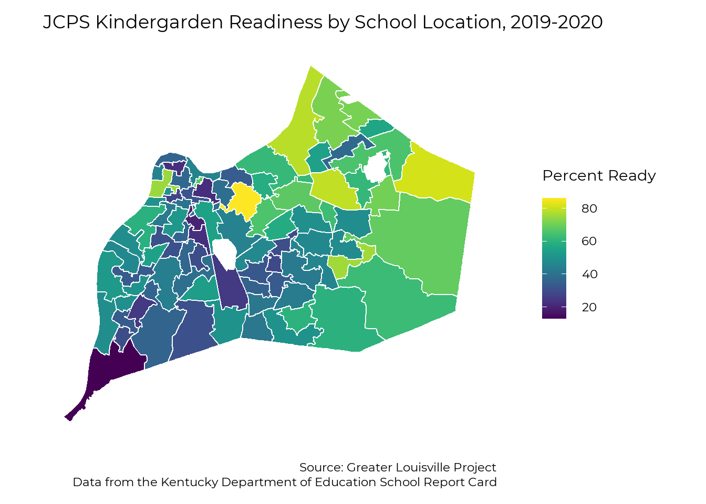

Early Childhood
Greater Louisville Project
2021
Early Care and Pre-K
Cost and Availability of Childcare
Data obtained from KyNECT. Pending Nate’s analysis.
# Creates four data frames linked by license number (CLR)
# provider_information: original file from the state.
# includes provider name, address, and several other fields.
# provider_hours: includes open days and hours
# provider_cost: includes program offerings and cost
# provider_other: includes other available info.
# Might just duplicate fields from program_information, though.
# Read in provider information (county, name, address, etc.)
provider_information <- readxl::read_xlsx("raw_data/Chilcare Provider Download.xlsx",
skip = 2)
# Subset to Jefferson County and rename license column for ease of use
provider_information %<>%
filter(County == "JEFFERSON") %>%
rename(CLR = `CLR#`)
# Read in provider data collected from KYnect
provider_data <- read_csv("raw_data/Childcare Provider Cost Data.csv",
col_names = c("CLR", "Day", "Time", "Services", "FullTime", "PartTime", "Other"))
# Check that no data is missing a license number - PASSED
# missing_CLR <- provider_data %>%
# filter(is.na(CLR)) %>%
# filter(!is.na(Day) | !is.na(Time) | !is.na(Services) |
# !is.na(FullTime) | !is.na(PartTime) | !is.na(Other))
#
# # Check that the list of license numbers are identical - PASSED
# check_data1 <- mean(provider_information$CLR %in% provider_data$CLR) +
# mean(provider_data$CLR %in% provider_information$CLR)
# Check values and number of each variable
# table(provider_data$Day) # good, 1 provider removed from listing
# table(provider_data$Time) # good
# table(provider_data$Services) # good
# table(provider_data$FullTime) # good
# table(test$PartTime) # often contains data for "Other"
# table(provider_data$Other) # good
# table(str_remove(provider_data$Other, "\\d*")) # good
# Filter out rows without license numbers (used to make data entry easier)
# Remove C6739, which closed between the creation of the provider registry and data collection
provider_data %<>%
filter(!is.na(CLR),
CLR != "C6739")
# The data for the "Other" column is often located in the PartTime column.
# Group by license and determine whether the number of children is in the PartTime column. (should be in Other)
# If so, move the data from the PartTime column to the Other column for that provider.
provider_data %<>%
group_by(CLR) %>%
mutate(move_PartTime = if_else(any(str_detect(PartTime, "Children")), T, F),
move_PartTime = if_else(is.na(move_PartTime), F, move_PartTime)) %>%
mutate(Other = if_else(move_PartTime, PartTime, Other),
PartTime = if_else(move_PartTime, NA_character_, PartTime)) %>%
ungroup() %>%
select(-move_PartTime)
# Hours data
# Clean by filtering data to days of the week
provider_hours <- provider_data %>%
select(CLR, Day, Time) %>%
filter(Day %in% c("Monday", "Tuesday", "Wednesday", "Thursday", "Friday", "Saturday", "Sunday"))
# Cost data
# Multiple offerings for each age-group are labeled with numbers (e.g. Toddler 1, Toddler 2). Remove.
# Clean by filtering data to type of service (infant, toddler, preschool, school age)
# Keep distinct (Removes multiple oferrings for the same age group with same prices)
provider_cost <- provider_data %>%
select(CLR, Services, FullTime, PartTime) %>%
mutate(Services = str_remove(Services, " \\d")) %>%
filter(Services %in% c("Infant", "Toddler", "Preschool", "School Age")) %>%
distinct()
# View number of different-cost options within each age group
# provider_cost %>% group_by(CLR, Services) %>% summarise(n = n()) %>% pull(n) %>% table()
# Other data
provider_other <- provider_data %>%
select(CLR, Other)
# Column contains data labels/headers followed by data
# Copy the data to a new column and shift it up one row to create key-value pairs
provider_other$header <- provider_other$Other
provider_other$data <- c(provider_other$Other[2:nrow(provider_other)], NA_character_)
# Filter the data to rows where the header is in the header column. (Remove value-key pairs.)
# Spread the data across columns
provider_other %<>%
select(-Other) %>%
filter(header %in% c("Capacity", "CCCAP Subsidy", "Acceditations", "Food Permit", "Transportation")) %>%
pivot_wider(names_from = header, values_from = data) %>%
mutate(
Capacity = str_remove(Capacity, " Children") %>% as.numeric)Childcare Workers compensation / education
Pending upload from Nate.
Head Start
Have data from KYSTATS, pending analysis.
Child Health
Adverse Childhood Experiences
Child data incoming from Sarojini. ETA Friday 2/12. Adult factors have been mapped to data sources.
Child Food Security
Data incoming from Feeding America
Kindergarten Readiness
Kindergarten readiness is an important indicator of whether children will succeed in the classroom. While the measure has limitations, it is a strong indicator of future student performance.
Based on data from KySTATS in 2015, students who entered school ready for kindergarten were more likely to
by Student Zip Code
This data was aquired through a data request to JCPS. Note that this data only includes parents who send their children to JCPS, so it’s not a reflection of all children in a zip code.
The data shows wide disparities in the kindergarten readiness results
# Load zip code map
load("raw_data/map_zip.RData")
# Ready in kready data
kready_zip <- readxl::read_excel("raw_data/Copy of 1920_Brigance Zip Code_Prior Settings TablesForORR.xlsx",
sheet = "ZipCode3Years",
range ="B4:K38",
col_names = c("zip", paste0(c("num_", "ready_", "notready_"),
rep(2018:2020, each = 3))),
col_types = c("text", rep("numeric", 9)),
na = "*")
# Clean and organize data frame
kready_zip %<>%
pivot_longer(num_2018:notready_2020, names_to = c("var_type", "year"), names_sep = "_") %>%
filter(var_type != "notready") %>%
mutate(
var_type = case_when(var_type == "num" ~ "population",
var_type == "ready" ~ "percent")) %>%
transmute(
zip, year, var_type,
kready = if_else(var_type == "percent", value * 100, value))
# Summarize data frame over three years due to unstable data
kready_zip_sum <- kready_zip %>%
pivot_wider(names_from = var_type, values_from = kready) %>%
group_by(zip) %>%
filter(all(!is.na(percent))) %>%
summarise(
percent = weighted.mean(percent, population),
population = sum(population),
.groups = "drop") %>%
rename(kready = percent)
# Join data to map
map_zip %<>% left_join(kready_zip_sum, by = "zip")
ggplot(map_zip) +
geom_sf(aes(fill = kready)) +
#scale_fill_manual(values = viridis::viridis(6, direction = -1), na.value = "grey") +
viridis::scale_fill_viridis(na.value = "grey",
name = "Percent Ready") +
theme_bw(base_size = 22, base_family = "Montserrat") +
theme(panel.grid = element_blank(),
axis.text = element_blank(),
axis.ticks = element_blank(),
axis.title = element_blank(),
panel.border = element_blank()) +
labs(title = "JCPS Kindergarden Readiness by Student's Home Zip Code",
subtitle = "Average for the school years 2017-2018, 2018-2019, and 2019-2020") +
theme(
panel.background = element_rect(fill = "transparent", color = NA), # bg of the panel
plot.background = element_rect(fill = "transparent", color = NA), # bg of the plot
legend.background = element_rect(fill = "transparent", color = "transparent"), # get rid of legend bg
legend.box.background = element_rect(fill = "transparent", color = "transparent"), # get rid of legend panel bg
legend.key = element_rect(fill = "transparent",colour = NA))
by School Location
This map shows kindergarten readiness results by school. Schools are shown by their student assignment area.
load("raw_data/kready_jc.RData")
load("raw_data/map_elementary.RData")
# Filter out
kready_jc_subset <- kready_jc %>%
filter(code != "275",
year == 2020,
demographic == "All Students",
prior_setting == "All Students") %>%
mutate(code = str_sub(code, 4, 6) %>%
as.numeric)
map_elementary %<>%
rename(
SCHOOL_NAME = SCHOOL_NAM,
LOCATION = LocNumber,
CLUSTER = ClusterNum)
map_elementary %<>%
left_join(kready_jc_subset, by = c("LOCATION" = "code"))
ggplot(map_elementary) +
geom_sf(aes(fill = kready)) +
#scale_fill_manual(values = viridis::viridis(6, direction = -1), na.value = "grey") +
viridis::scale_fill_viridis(na.value = "grey",
name = "Percent Ready") +
theme_bw(base_size = 22, base_family = "Montserrat") +
theme(panel.grid = element_blank(),
axis.text = element_blank(),
axis.ticks = element_blank(),
axis.title = element_blank(),
panel.border = element_blank()) +
labs(title = "JCPS Kindergarden Readiness by School Location", 2020) +
theme(
panel.background = element_rect(fill = "transparent", color = NA), # bg of the panel
plot.background = element_rect(fill = "transparent", color = NA), # bg of the plot
legend.background = element_rect(fill = "transparent", color = "transparent"), # get rid of legend bg
legend.box.background = element_rect(fill = "transparent", color = "transparent"), # get rid of legend panel bg
legend.key = element_rect(fill = "transparent",colour = NA))
by Prior Setting
The largest differences in kindergarten readiness are seen based on prior setting.
Children who were in licensed childcare providers prior to entering school are most likely to be kindergarten ready, while children who stayed at home with a parent or guardian are least likely to be kindergarten ready.
Children who were previously enrolled in Head Start, a State-funded preschool program, or were in another home setting, such as a private sitter or other family member, fall in the middle.
load("raw_data/kready_ky.RData")
kready_louisville <- kready_ky %>%
filter(variable == "lou",
sex == "total",
race == "total",
frl_status == "total",
prior_setting %in% c("State-Funded", "Head Start", "Child Care", "Home", "Other"))
plt_by(kready_louisville,
prior_setting,
kready,
title_text = "Kindergarten Readiness by Prior Setting",
remove_legend_title = T)
by Race
kready_race <- kready_ky %>%
filter(variable == "lou",
sex == "total",
race %in% c("black", "white"),
frl_status == "total",
prior_setting == "All Students") %>%
mutate(race = str_to_title(race))
plt_by(kready_race,
race,
kready,
title_text = "Kindergarten Readiness by Race")
By Race and Prior setting
kready_race_plotly <- kready_ky %>%
filter(variable == "lou",
sex == "total",
race %in% c("black", "white", "hispanic", "asian"),
frl_status == "total",
prior_setting %in% c("All Students", "State Funded", "Head Start", "Child Care", "Home", "Other")) %>%
mutate(race = str_to_title(race)) %>%
pivot_wider(names_from = race, values_from = kready)
trnfm_list <-
list(
list(
type = 'filter',
target = ~prior_setting,
operation = 'in',
value = unique(kready_race_plotly$prior_setting)[1]
))
plot_ly(kready_race_plotly) %>%
# add_trace(x = ~year, y = ~Black_ChildCare, name = "Black", type = "scatter", mode = "lines",
# line = list(color = '#d63631', width = 4), visible="legendonly") %>%
# add_trace(x = ~year, y = ~White_ChildCare, name = "White", type = "scatter", mode = "lines",
# line = list(color = '#323844', width = 4), visible="legendonly") %>%
add_trace(x = ~year, y = ~Black, name = "Black", type = "scatter", mode = "lines",
line = list(color = '#d63631', width = 4), transforms = trnfm_list) %>%
add_trace(x = ~year, y = ~White, name = "White", type = "scatter", mode = "lines",
line = list(color = '#323844', width = 4), transforms = trnfm_list) %>%
add_trace(x = ~year, y = ~Hispanic, name = "Hispanic", type = "scatter", mode = "lines",
line = list(color = '#eaab21', width = 4), transforms = trnfm_list) %>%
add_trace(x = ~year, y = ~Asian, name = "Asian", type = "scatter", mode = "lines",
line = list(color = '#a7bfd7', width = 4), transforms = trnfm_list) %>%
# add_trace(x = ~year, y = ~Black_Home, name = "Black_Home", type = "scatter", mode = "lines",
# line = list(color = '#d63631', width = 4), showlegend=FALSE) %>%
# add_trace(x = ~year, y = ~White_Home, name = "White_Home", type = "scatter", mode = "lines",
# line = list(color = '#323844', width = 4), showlegend=FALSE) %>%
layout(title = "Kindergerten Readiness by Race",
xaxis = list(title = "Year"),
yaxis = list(title = "Percent Ready", range = c(0, 100)),
updatemenus = list(
list(
x = 1.25,
y = 0.75,
buttons = list(
list(method = "restyle",
args = list("transforms[0].value", unique(kready_race_plotly$prior_setting)[1]),
label = unique(kready_race_plotly$prior_setting)[1]),
list(method = "restyle",
args = list("transforms[0].value", unique(kready_race_plotly$prior_setting)[2]),
label = unique(kready_race_plotly$prior_setting)[2]),
list(method = "restyle",
args = list("transforms[0].value", unique(kready_race_plotly$prior_setting)[3]),
label = unique(kready_race_plotly$prior_setting)[3]),
list(method = "restyle",
args = list("transforms[0].value", unique(kready_race_plotly$prior_setting)[4]),
label = unique(kready_race_plotly$prior_setting)[4]),
list(method = "restyle",
args = list("transforms[0].value", unique(kready_race_plotly$prior_setting)[5]),
label = unique(kready_race_plotly$prior_setting)[5]),
list(method = "restyle",
args = list("transforms[0].value", unique(kready_race_plotly$prior_setting)[6]),
label = unique(kready_race_plotly$prior_setting)[6])))))